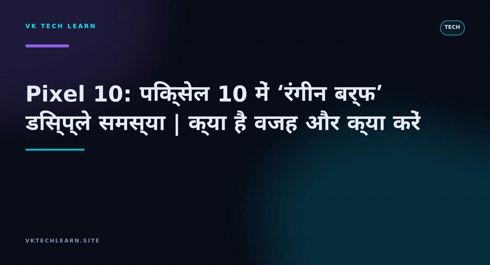

Pixel 10: पिक्सेल 10 में ‘रंगीन बर्फ’ डिस्प्ले समस्या | क्या है वजह और क्या करें
Pixel 10: पिक्सेल 10 में आई बड़ी समस्या, स्क्रीन पर ‘रंगीन बर्फ’ देखकर यूजर्स परेशान
Google ने हाल ही में Pixel 10 लॉन्च किया है, लेकिन लॉन्च के कुछ ही दिनों बाद कई ग्राहकों ने शिकायत की है कि उनके फोन की स्क्रीन पर अचानक “रंगीन बर्फ” दिखाई देने लगी है। यह पुराने टीवी में खराब सिग्नल जैसा दिखता है और देखने में बहुत अजीब लगता है।

क्या है ‘रंगीन बर्फ’ की समस्या?
यूजर्स के अनुसार, फोन इस्तेमाल करते समय या कभी-कभी बिना इस्तेमाल के भी स्क्रीन पर रंगीन धब्बे और पिक्सलेटेड लाइनें नजर आती हैं। हालांकि, टच काम करता रहता है लेकिन विजुअल अनुभव खराब हो जाता है।
समस्या का कारण क्या हो सकता है?
- डिस्प्ले ड्राइवर या GPU में सॉफ्टवेयर बग
- OLED पैनल की खराबी
- थर्ड पार्टी ऐप्स द्वारा ग्राफिकल ओवरले
गूगल का क्या कहना है?
अभी तक गूगल ने कोई आधिकारिक बयान जारी नहीं किया है, लेकिन Pixel टीम Reddit पर प्रभावित यूजर्स से संपर्क कर रही है और जानकारी जुटा रही है। इससे साफ है कि कंपनी इस समस्या को लेकर सक्रिय है।
यूजर्स को क्या करना चाहिए?
- डेटा बैकअप करें।
- फोन रीस्टार्ट करके देखें।
- सेफ मोड में जांचें कि समस्या रहती है या नहीं।
- सिस्टम और ऐप्स को अपडेट करें।
- अगर समस्या बनी रहे तो Google सपोर्ट से संपर्क करें।
निष्कर्ष
Pixel 10 में आ रही यह समस्या कंपनी के लिए बड़ी चुनौती है। हालांकि सभी डिवाइस प्रभावित नहीं हैं, लेकिन यह देखना होगा कि Google इसे कितनी जल्दी ठीक करता है। तब तक यूजर्स को सलाह दी जाती है कि सपोर्ट से संपर्क करें और समस्या को डॉक्यूमेंट करें।
#Pixel10 #GooglePixel #DisplayIssue #TechNews #Smartphones #PixelProblem